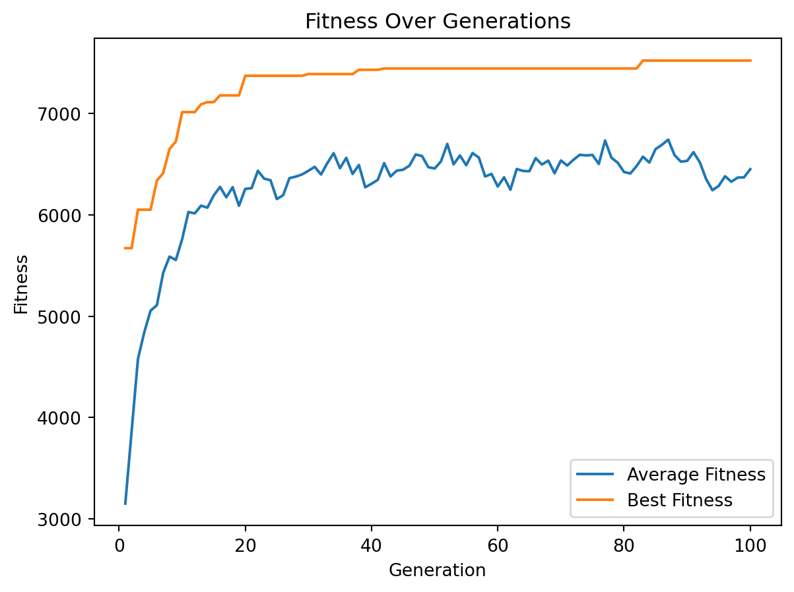

import requests
def read_knapsack_data(url):
"""
Reads and processes knapsack problem data from a given URL.
Args:
url (str): The URL pointing to the data file.
Returns:
values, weights, capacity
Raises:
Exception: If there is an issue with fetching the data or parsing the content.
"""
try:
# Fetch data from the URL
response = requests.get(url)
# Raise an error if the request was unsuccessful
response.raise_for_status()
# Split the data into lines
lines = response.text.strip().split('\n')
# Parse the number of items
num_items = int(lines[0].strip())
# Parse the values and weights lists
values = list(map(int, lines[1].strip().split()))
weights = list(map(int, lines[2].strip().split()))
# Parse the capacity
capacity = int(lines[3].strip())
# Validate that the number of items matches the length of values and weights
if len(values) != num_items or len(weights) != num_items:
raise ValueError("The number of items does not match the length of values or weights list.")
# Return the values, weights, and capacity
return np.array(values), np.array(weights), capacity
except requests.exceptions.RequestException as e:
print(f"Error fetching data from URL: {e}")
raise
except ValueError as e:
print(f"Error processing data: {e}")
raise
except Exception as e:
print(f"An unexpected error occurred: {e}")
raiseLecture 16
0/1 Knapsack Problem
Problem
0/1 knapsack problem: Given items with defined weights and values, the objective is to maximize total value by selecting items for a knapsack without surpassing a fixed capacity. Each item must be either fully included (1) or excluded (0).
Attribution: Generated by DALL-E, via ChatGPT (GPT-4), OpenAI, November 10, 2024.
Utilities
Greedy Algorithms
Greedy by weight
A possible greedy strategy involves selecting items in increasing order of weight until the total exceeds the capacity.
def greedy_knapsack_weight(weights, values, capacity):
"""
Greedy algorithm for the 0/1 Knapsack Problem based on weigth.
Args:
weights (np.ndarray): Weights of the items.
values (np.ndarray): Values of the items.
capacity (int): Capacity of the knapsack.
Returns:
tuple: Selected items (binary array), total value, total weight.
"""
num_items = len(weights)
# Create a list of items with their values and original indices
items = list(zip(weights, values, range(num_items)))
# Sort items by weight in increasing order
items.sort()
total_weight = 0
total_value = 0
solution = np.zeros(num_items, dtype=int)
# Select items based on the sorted order
for w, v, idx in items:
if total_weight + w <= capacity:
solution[idx] = 1
total_weight += w
total_value += v
else:
continue # Skip items that would exceed the capacity
return solution, total_value, total_weightGreedy by value
Another greedy strategy involves selecting items in descending order of value until the total exceeds the capacity.
import numpy as np
def greedy_knapsack_value(weights, values, capacity):
"""
Greedy algorithm for the 0/1 Knapsack Problem based on value.
Args:
weights (np.ndarray): Weights of the items.
values (np.ndarray): Values of the items.
capacity (int): Capacity of the knapsack.
Returns:
tuple: Selected items (binary array), total value, total weight.
"""
num_items = len(weights)
# Create a list of items with their values and original indices
items = list(zip(values, weights, range(num_items)))
# Sort items by value in decreasing order
items.sort(reverse=True)
total_weight = 0
total_value = 0
solution = np.zeros(num_items, dtype=int)
# Select items based on the sorted order
for v, w, idx in items:
if total_weight + w <= capacity:
solution[idx] = 1
total_weight += w
total_value += v
else:
continue # Skip items that would exceed the capacity
return solution, total_value, total_weightGreedy by ratio
Based on value-to-weight ratio.
def greedy_knapsack_ratio(weights, values, capacity):
"""
Greedy algorithm for the 0/1 Knapsack Problem based on value-to-weight ratio.
Args:
weights (np.ndarray): Weights of the items.
values (np.ndarray): Values of the items.
capacity (int): Capacity of the knapsack.
Returns:
tuple: Selected items (binary array), total value, total weight.
"""
num_items = len(weights)
# Calculate value-to-weight ratio for each item
ratio = values / weights
# Create a list of items with their ratios and original indices
items = list(zip(ratio, values, weights, range(num_items)))
# Sort items by ratio in decreasing order
items.sort(reverse=True)
total_weight = 0
total_value = 0
solution = np.zeros(num_items, dtype=int)
# Select items based on the sorted order
for r, v, w, idx in items:
if total_weight + w <= capacity:
solution[idx] = 1
total_weight += w
total_value += v
else:
continue # Skip items that would exceed the capacity
return solution, total_value, total_weightGenetic Algorithm
See lecture notes for details.
import random
def initialize_population(pop_size, num_items):
"""
Initialize the population with random binary strings.
Args:
pop_size (int): Number of individuals in the population.
num_items (int): Number of items in the knapsack problem.
Returns:
np.ndarray: Initialized population.
"""
return np.random.randint(2, size=(pop_size, num_items))def evaluate_fitness(population, weights, values, capacity, penalty_factor=10):
"""
Evaluate the fitness of each individual in the population.
Args:
population (np.ndarray): Current population.
weights (np.ndarray): Weights of the items.
values (np.ndarray): Values of the items.
capacity (int): Capacity of the knapsack.
penalty_factor (float): Penalty factor for exceeding capacity.
Returns:
np.ndarray: Fitness values for the population.
"""
total_weights = np.dot(population, weights)
total_values = np.dot(population, values)
penalties = penalty_factor * np.maximum(0, total_weights - capacity)
fitness = total_values - penalties
return fitnessdef tournament_selection(population, fitness, tournament_size):
"""
Select individuals from the population using tournament selection.
Args:
population (np.ndarray): Current population.
fitness (np.ndarray): Fitness values of the population.
tournament_size (int): Number of individuals in each tournament.
Returns:
np.ndarray: Selected parents.
"""
pop_size = population.shape[0]
selected_indices = []
for _ in range(pop_size):
participants = np.random.choice(pop_size, tournament_size, replace=False)
best = participants[np.argmax(fitness[participants])]
selected_indices.append(best)
return population[selected_indices]def roulette_selection(population, fitness):
"""
Select individuals from the population using roulette wheel selection.
Args:
population (np.ndarray): Current population.
fitness (np.ndarray): Fitness values of the population.
Returns:
np.ndarray: Selected parents.
"""
# Adjust fitness to be non-negative
min_fitness = np.min(fitness)
adjusted_fitness = fitness - min_fitness + 1e-6 # small epsilon to avoid zero division
total_fitness = np.sum(adjusted_fitness)
probabilities = adjusted_fitness / total_fitness
pop_size = population.shape[0]
selected_indices = np.random.choice(pop_size, size=pop_size, p=probabilities)
return population[selected_indices]def single_point_crossover(parents, crossover_rate):
"""
Perform single-point crossover on the parents.
Args:
parents (np.ndarray): Selected parents.
crossover_rate (float): Probability of crossover.
Returns:
np.ndarray: Offspring after crossover.
"""
num_parents, num_genes = parents.shape
np.random.shuffle(parents)
offspring = []
for i in range(0, num_parents, 2):
parent1 = parents[i]
parent2 = parents[i+1 if i+1 < num_parents else 0]
child1 = parent1.copy()
child2 = parent2.copy()
if np.random.rand() < crossover_rate:
point = np.random.randint(1, num_genes) # Crossover point
child1[:point], child2[:point] = parent2[:point], parent1[:point]
offspring.append(child1)
offspring.append(child2)
return np.array(offspring)def uniform_crossover(parents, crossover_rate):
"""
Perform uniform crossover on the parents.
Args:
parents (np.ndarray): Selected parents.
crossover_rate (float): Probability of crossover.
Returns:
np.ndarray: Offspring after crossover.
"""
num_parents, num_genes = parents.shape
np.random.shuffle(parents)
offspring = []
for i in range(0, num_parents, 2):
parent1 = parents[i]
parent2 = parents[i+1 if i+1 < num_parents else 0]
child1 = parent1.copy()
child2 = parent2.copy()
if np.random.rand() < crossover_rate:
mask = np.random.randint(0, 2, size=num_genes).astype(bool)
child1[mask], child2[mask] = parent2[mask], parent1[mask]
offspring.append(child1)
offspring.append(child2)
return np.array(offspring)def mutation(offspring, mutation_rate):
"""
Apply bit-flip mutation to the offspring.
Args:
offspring (np.ndarray): Offspring after crossover.
mutation_rate (float): Probability of mutation for each bit.
Returns:
np.ndarray: Offspring after mutation.
"""
num_offspring, num_genes = offspring.shape
mutation_matrix = np.random.rand(num_offspring, num_genes) < mutation_rate
offspring[mutation_matrix] = 1 - offspring[mutation_matrix]
return offspringdef elitism(population, fitness, elite_size):
"""
Preserve the top-performing individuals in the population.
Args:
population (np.ndarray): Current population.
fitness (np.ndarray): Fitness values of the population.
elite_size (int): Number of top individuals to preserve.
Returns:
np.ndarray: Elite individuals.
"""
elite_indices = np.argsort(fitness)[-elite_size:] # Get indices of top individuals
elites = population[elite_indices]
return elitesdef genetic_algorithm(weights, values, capacity, pop_size=100, num_generations=200, crossover_rate=0.8,
mutation_rate=0.05, elite_percent=0.02, selection_type='tournament', tournament_size=3,
crossover_type='single_point'):
"""
Main function to run the genetic algorithm for the 0/1 knapsack problem.
Args:
weights (np.ndarray): Weights of the items.
values (np.ndarray): Values of the items.
capacity (int): Capacity of the knapsack.
pop_size (int): Population size.
num_generations (int): Number of generations.
crossover_rate (float): Probability of crossover.
mutation_rate (float): Probability of mutation.
elite_percent (float): Percentage of elites to preserve.
selection_type (str): 'tournament' or 'roulette'.
tournament_size (int): Number of individuals in tournament selection.
crossover_type (str): 'single_point' or 'uniform'.
Returns:
tuple: Best solution, best value, and best weight found.
"""
num_items = len(weights)
elite_size = max(1, int(pop_size * elite_percent))
population = initialize_population(pop_size, num_items)
average_fitness_history = []
best_fitness_history = []
for generation in range(num_generations):
fitness = evaluate_fitness(population, weights, values, capacity)
# Track average and best fitness
average_fitness = np.mean(fitness)
best_fitness = np.max(fitness)
average_fitness_history.append(average_fitness)
best_fitness_history.append(best_fitness)
# Elitism
elites = elitism(population, fitness, elite_size)
# Selection
if selection_type == 'tournament':
parents = tournament_selection(population, fitness, tournament_size)
elif selection_type == 'roulette':
parents = roulette_selection(population, fitness)
else:
raise ValueError("Invalid selection type")
# Crossover
if crossover_type == 'single_point':
offspring = single_point_crossover(parents, crossover_rate)
elif crossover_type == 'uniform':
offspring = uniform_crossover(parents, crossover_rate)
else:
raise ValueError("Invalid crossover type")
# Mutation
offspring = mutation(offspring, mutation_rate)
# Create new population
population = np.vstack((elites, offspring))
# Ensure population size
if population.shape[0] > pop_size:
population = population[:pop_size]
elif population.shape[0] < pop_size:
# Add random individuals to fill population
num_new_individuals = pop_size - population.shape[0]
new_individuals = initialize_population(num_new_individuals, num_items)
population = np.vstack((population, new_individuals))
# After all generations, return the best solution
fitness = evaluate_fitness(population, weights, values, capacity)
best_index = np.argmax(fitness)
best_solution = population[best_index]
best_value = np.dot(best_solution, values)
best_weight = np.dot(best_solution, weights)
return best_solution, best_value, best_weight, average_fitness_history, best_fitness_historydef genetic_algorithm_do_n(weights, values, capacity, pop_size=100, num_generations=200, crossover_rate=0.8,
mutation_rate=0.05, elite_percent=0.02, selection_type='tournament', tournament_size=3, crossover_type='single_point', repeats=100):
best_solution = None
best_value = -1
best_weight = -1
best_averages = []
best_bests = []
for i in range(repeats):
solution, value, weight, average_history, best_history = genetic_algorithm(weights, values, capacity, pop_size, num_generations, crossover_rate,
mutation_rate, elite_percent, selection_type, tournament_size, crossover_type)
if value > best_value and weight <= capacity:
best_solution = solution
best_value = value
best_weight = weight
best_averages = average_history
best_bests = best_history
return best_solution, best_value, best_weight, best_averages, best_bestsTests
Testing our genetic algorithm on data from Google OR-Tools.
import matplotlib.pyplot as plt
def test_genetic_algorithm():
# Sample data
values = np.array([
360, 83, 59, 130, 431, 67, 230, 52, 93, 125, 670, 892, 600, 38, 48, 147,
78, 256, 63, 17, 120, 164, 432, 35, 92, 110, 22, 42, 50, 323, 514, 28,
87, 73, 78, 15, 26, 78, 210, 36, 85, 189, 274, 43, 33, 10, 19, 389, 276,
312])
weights = np.array([
7, 0, 30, 22, 80, 94, 11, 81, 70, 64, 59, 18, 0, 36, 3, 8, 15, 42, 9, 0,
42, 47, 52, 32, 26, 48, 55, 6, 29, 84, 2, 4, 18, 56, 7, 29, 93, 44, 71,
3, 86, 66, 31, 65, 0, 79, 20, 65, 52, 13])
capacity = 850
# Run genetic algorithm
best_solution, best_value, best_weight, avg_fitness, best_fitness = genetic_algorithm_do_n(
weights, values, capacity, pop_size=50, num_generations=100,
crossover_rate=0.8, mutation_rate=0.05, elite_percent=0.02,
selection_type='tournament', tournament_size=3)
print("Best Solution:", best_solution)
print("Best Value:", best_value)
print("Best Weight:", best_weight)
# Plot the fitness over generations
generations = range(1, len(avg_fitness) + 1)
plt.plot(generations, avg_fitness, label='Average Fitness')
plt.plot(generations, best_fitness, label='Best Fitness')
plt.xlabel('Generation')
plt.ylabel('Fitness')
plt.title('Fitness Over Generations')
plt.legend()
plt.show()
test_genetic_algorithm()Best Solution: [1 1 0 1 1 0 1 0 0 0 1 1 1 0 1 1 1 1 1 1 1 1 1 0 1 1 0 1 0 1 1 1 1 0 1 0 0
0 1 1 0 0 1 0 1 0 0 1 1 1]
Best Value: 7525
Best Weight: 845
Testing all the algorithms on data from pages.mtu.edu/~kreher/cages/data/knapsack/.
import pandas as pd
BASE_URL = 'https://pages.mtu.edu/~kreher/cages/data/knapsack/'
datasets = [
'ks_8a.dat','ks_8b.dat','ks_8c.dat','ks_8d.dat','ks_8e.dat','ks_12a.dat',
'ks_12b.dat','ks_12c.dat','ks_12d.dat','ks_12e.dat','ks_16a.dat','ks_16b.dat',
'ks_16c.dat','ks_16d.dat','ks_16e.dat','ks_20a.dat','ks_20b.dat','ks_20c.dat',
'ks_20d.dat','ks_20e.dat','ks_24a.dat','ks_24b.dat','ks_24c.dat','ks_24d.dat',
'ks_24e.dat'
]
columns = [
'file_path', 'capacity',
'gw_value', 'gw_weight',
'gv_value', 'gw_weight',
'gr_value', 'gr_weight',
'ga_value', 'ga_weight'
]
df = pd.DataFrame(columns=columns)
for idx, file_path in enumerate(datasets):
values, weights, capacity = read_knapsack_data(BASE_URL + file_path)
solution, total_value, total_weight = greedy_knapsack_weight(weights, values, capacity)
gw_value = total_value
gw_weight = total_weight
solution, total_value, total_weight = greedy_knapsack_value(weights, values, capacity)
gv_value = total_value
gv_weight = total_weight
solution, total_value, total_weight = greedy_knapsack_ratio(weights, values, capacity)
gr_value = total_value
gr_weight = total_weight
solution, total_value, total_weight, avg_fitness, best_fitness = genetic_algorithm_do_n(
weights, values, capacity, pop_size=50, num_generations=100,
crossover_rate=0.8, mutation_rate=0.05, elite_percent=0.02,
selection_type='tournament', tournament_size=3, crossover_type='single_point')
ga_value = total_value
ga_weight = total_weight
df.loc[idx] = [
file_path, capacity,
gw_value, gw_weight,
gv_value, gw_weight,
gr_value, gr_weight,
ga_value, ga_weight
]
df.to_csv("knapsack.csv", index=False)
print(df) file_path capacity gw_value gw_weight gv_value gw_weight gr_value \
0 ks_8a.dat 1863633 874414 1803989 925369 1803989 925369
1 ks_8b.dat 1822718 724029 1421763 836649 1421763 724029
2 ks_8c.dat 1609419 771637 1609296 756847 1609296 713452
3 ks_8d.dat 2112292 749458 1558340 1006793 1558340 881823
4 ks_8e.dat 2493250 1224805 2386238 1300939 2386238 1300939
5 ks_12a.dat 2805213 1180238 2323972 1409053 2323972 1381444
6 ks_12b.dat 3259036 1334963 2639964 1681436 2639964 1602435
7 ks_12c.dat 2489815 926226 1808471 1152681 1808471 1303224
8 ks_12d.dat 3453702 1679959 3406646 1724265 3406646 1858992
9 ks_12e.dat 2520392 1277814 2429214 1216398 2429214 1309915
10 ks_16a.dat 3780355 1654432 3150713 1886539 3150713 2018230
11 ks_16b.dat 4426945 1838356 3601726 2182562 3601726 2170190
12 ks_16c.dat 4323280 1741661 3539978 2125245 3539978 2176322
13 ks_16d.dat 4450938 2051218 4155271 2189910 4155271 2207441
14 ks_16e.dat 3760429 1735397 3442535 1954173 3442535 1967510
15 ks_20a.dat 5169647 2558243 5101533 2658865 5101533 2721946
16 ks_20b.dat 4681373 2230065 4543967 2419141 4543967 2383424
17 ks_20c.dat 5063791 2128763 4361690 2410432 4361690 2723135
18 ks_20d.dat 4286641 1870486 3557405 2158431 3557405 2276327
19 ks_20e.dat 4476000 2115412 4173744 2159969 4173744 2294511
20 ks_24a.dat 6404180 2886589 5845661 3174264 5845661 3393387
21 ks_24b.dat 5971071 2961351 5941814 3019080 5941814 3164151
22 ks_24c.dat 5870470 2505304 5008038 2830470 5008038 3045772
23 ks_24d.dat 5762284 2711513 5247821 3047367 5247821 3135427
24 ks_24e.dat 6654569 3278044 6634696 3296337 6634696 3401688
gr_weight ga_value ga_weight
0 1714834 925369 1714834
1 1421763 -1 -1
2 1422422 771637 1609296
3 1682688 1084704 2059405
4 2377405 1300939 2377405
5 2672179 1468476 2804581
6 2953017 1753926 3254705
7 2406387 1329478 2458307
8 3412958 1858992 3412958
9 2477116 1309915 2477116
10 3768480 2018230 3768480
11 4071350 2311731 4392978
12 4054333 2282303 4315302
13 4245406 2298302 4422372
14 3616049 2030691 3755734
15 5054489 2788040 5161352
16 4471059 2471511 4676284
17 5029940 2723135 5029940
18 4273053 2280911 4275282
19 4353690 2350457 4471547
20 6379172 3393387 6379172
21 5911388 3194906 5970122
22 5820857 3066886 5848030
23 5734259 3150365 5754023
24 6435390 3501861 6649161 In the context of the 25 instances of the 0/1 knapsack problem, the genetic algorithm consistently outperformed the greedy algorithms. Specifically, it achieved solutions that were equivalent to the best greedy algorithm results in 8 cases and surpassed them in 17 cases, with up to 6% improvement.
Resources
- DEAP is an evolutionary computation framework designed for rapid prototyping and testing of ideas. This environment has been developed at Université Laval since (at least) 2012.